Import General ledger accounts (Setup ribbon)
This option will allow you to import data for Account records from a valid file format into an existing Set of Books.
To be able to import the data for Account records, you need to have created a "Tab delimited" (*.txt) export file in the Export (Setup ribbon).
To import accounts into a Set of Books:
- On the Setup ribbon, select Import.
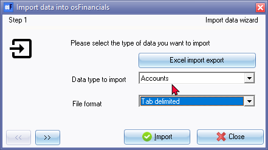
- Select Accounts as the "Data type to import".
- Select the "Tab delimited" (recommended) file type to import.
|
|
Other file types created with the export as "Tab delimited" file type, is SLK, XML Database File (*.XML), which is stored in your exported folder. |

|
|
Other available file types, is:" (*.TXF) TurboCASH Exchange File , (*.WK1) Lotus Spreadsheet File, (*.Xml) Xml Database, Comma separated values" and "Windows list separator values". |
- Click on the button to locate the data file.
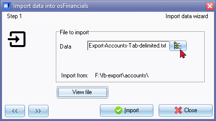
- Click on the 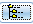 button to locate the data file.
|
|
Optional - You may click on the View file button to view the file in your system's default app (program) associated with the exported file type. An example of the exported Tab Delimited text file is as follows: 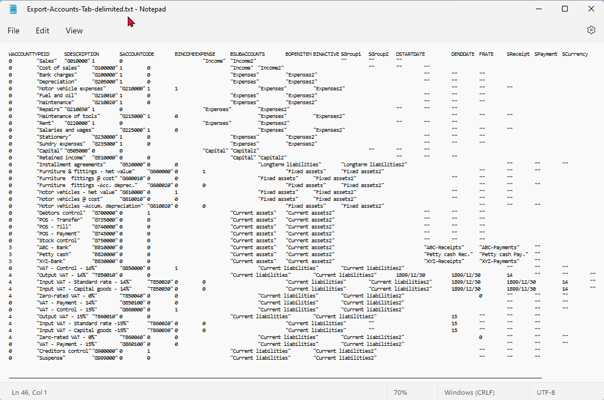 |
- Click on the button.

- Click on the Import button. The "ImportCheck" screen is displayed:

|
|
You may use the record buttons to add, delete or change the accounts on the "ImportCheck" screen. You may then click on the All or OK buttons to import the accounts. |

|
|
The values of the data in the "ImportCheck" screen, listing the general ledger accounts, is as follows:
|
|
|
BOPENITEM column is blank. All accounts for which the "Open item account" was set as "Yes" is set to "No" is blank. This will import any Open accounts as normal accounts. You may need to identify and set these accounts as a "Open item account". |

|
|
BINACTIVE column is blank. All accounts for which the "Status" is set to "Disabled" is blank. This will import any "Disabled (inactive) accounts as "Enabled" (active) accounts. You need to Delete these accounts; or set them as "Disabled" (inactive) after importing these accounts. |
|
|
Bank accounts - WACCOUNTTYPEID column is "3". If Bank accounts is imported, it will create Payments bathes and/or Receipt batches for each bank account depending on the Default bank reconciliation method setting (Setup - System parameters on the Setup ribbon). You may select to delete the Bank accounts on the "ImportCheck" screen. If these Bank accounts is not deleted on the "ImportCheck" screen, it will import the Bank accounts, as well as the Payments bathes and/or Receipt batches associated with each of the Bank accounts. You may then need to delete these Bank accounts, as well as its associated Payments bathes and/or Receipt batches associated with each of the Bank accounts and create (add) your own Bank accounts and associated Payments bathes and/or Receipt batches. |
- Once the import process is finished an information message will be displayed.
"Data file import completed!"
- Click on the OK button.
- Go to the Reports ribbon and select Reports → Ledger → Listing menu to check that the ledger accounts are correct.
|
|
Blocked accounts - If accounts status is set to disabled, these accounts will be imported. Note the status of disabled accounts is set to enabled. For example, if you have changed the Tax rates, and do not wish to use these old accounts, you may delete these accounts or disable them. The Reporting groups for Account groups 1 and Account group 2, will also be imported in the Setup → Groups. |
- If you need to edit the ledger accounts, go to the Setup ribbon and select Accounts.
After Import
Link Account group 1 / Account group 2 to Financial categories
If Account group 1 and or Account group 2 is imported into your Set of Books, these Account groups should be linked to the imported general ledger accounts in Setup → Accounts (Setup ribbon).
These Account groups may not be linked to the 5 Financial categories (i.e. Assets, Liabilities, Capital, Income and Expenses).
You may need to link the Account groups to the Financial categories (on the Setup ribbon) in the following two (2) options:
- Setup → Financial categories.
- Setup → Accounts.
The basic account groups should already be included in your imported Set of Books, and you may add, edit or delete any of these groups in Setup → Groups on the Account group 1 and/or Account group 2, before linking them to financial categories.
The sequence in which the groups and accounts are listed, may be changed by selecting the groups on the list and use the Move up or Move down buttons.
This will enable you to structure your general ledger reports (i.e. Trial balance, Income statement, Balance sheet, Chart of Accounts), according to your specific reporting needs.
Disabled (Inactive) Accounts
If the status of Accounts were set as Disabled in the source Set of Books from which the Export file was exported, the Disabled accounts will be imported as "Enabled". You may need to:
- Delete the "Disabled" accounts, if you do not wish to keep these accounts; or
- Keep the Status of these Accounts as "Enabled" (active); or set the Status of these Accounts as "Disabled" (inactive).
Tax (VAT/GST/Sales tax) Accounts / Codes
It is important to check the Tax (VAT/GST/Sales tax accounts and Tax percentages, before you process any transactions in batches and/or documents.
Recreate Tax (VAT/GST/Sales tax) codes with missing Tax tab
The Tax tab on the first Tax code (e.g. Output VAT - 14% (T850010) and Output VAT - 15% (T850010) is missing after Import.
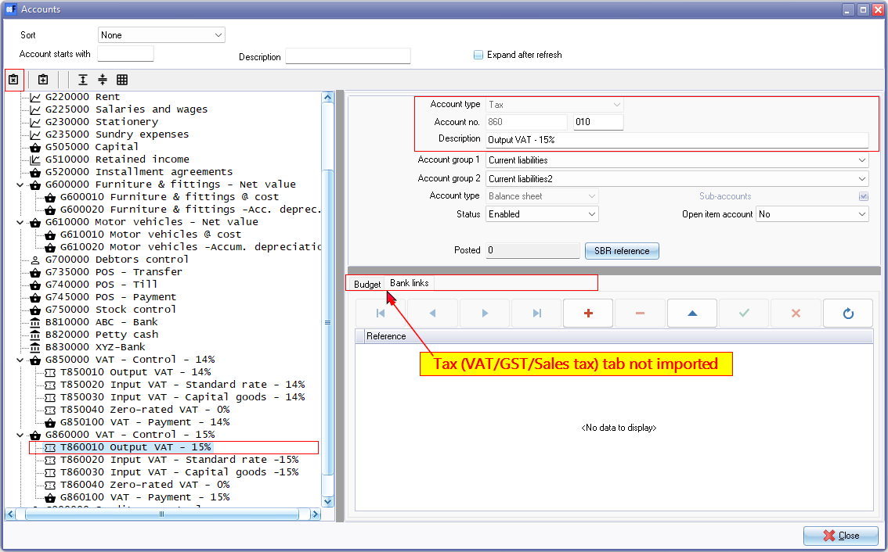
Select the Tax code (e.g. T860010) and Copy the Description (e.g. Output VAT - 15%) to your clipboard.
Click on the Delete  icon.
icon.
Select the Tax control account (e.g. VAT - Control - Output VAT - 15%) (main account).
Click on the Add icon.
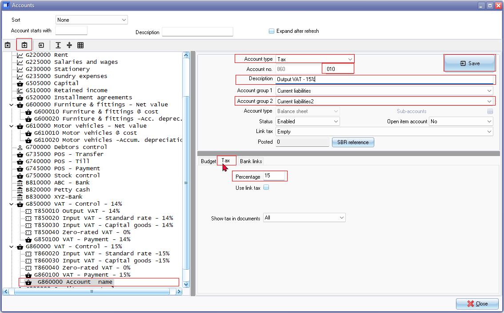
A new Ledger account will be added. Select the following:
- Account type - Select Tax.
- Account number - Change the "000" in the Sub-account section with "010". You may use the same sub account code as the deleted Tax account.
- Description - Enter the name of your Output tax account (or paste from your clipboard).
- Account group 2 - If Account group 2 is used in the in the other accounts, you need to reselect Account group 2.
- On the Tax tab, enter the Tax percentage (e.g. 15) and click on the Save button.
The Account name will change to "Output VAT - 15%" (as in this example) and the Ledger  icon will change to the Tax
icon will change to the Tax  icon.
icon.
Zero -rated Tax (VAT/GST/Sales tax) accounts - Confirm Zero percentage
Zero- rated Tax (VAT/GST/Sales tax) with a Tax percentage of "0%" may be blank.
On the Tax codes - Tax rates report (User reports → Tax on the Reports ribbon), Tax percentages with a zero-rate will be Imported as a blank percentage.
This may cause the Zero rated Tax (VAT/GST/Sales tax) selected in processing transactions in Batches and/or Documents not to display correctly on Tax reports.
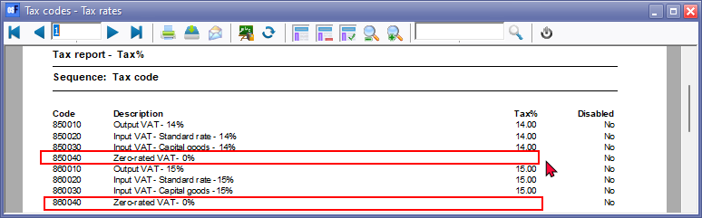
To fix this; select the Zero-rated Tax (VAT/GST/Sales tax) account.
Overtype the Tax percentage with "0" and click Save.
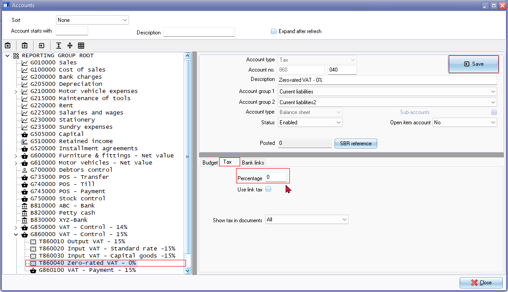
After confirming Zero-rated "0" tax percentages (tax rates) the Tax rates should be correctly listed as "0" percentage.
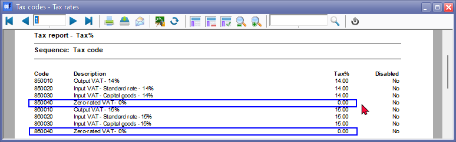
Delete / Add Bank Accounts
If Bank accounts is imported, it will create a Payments batch/ Receipts batch for each Bank account / Petty Cash account.
It is recommended that the Bank Accounts, as well as the Imported batch types be deleted and recreated.
If a blank Set of Books was created; using the "Customise your own Set of Books (Advanved)?" option on the "Creation wizard", the setting for the Bank import plugin, will be activated. This means, that by default, the "Default bank reconciliation method" option is not selected (Setup → System parameters) and the Bank account will be linked to a combined Payments and Receipt batch.
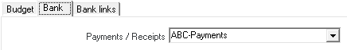
If you do not wish to use the Bank import plugin, to import bank statements, (and manually process bank transactions is a separate Payments batch and Receipts batch), the "Default bank reconciliation method" option is need to be selected (Setup → System parameters).
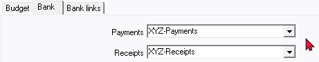